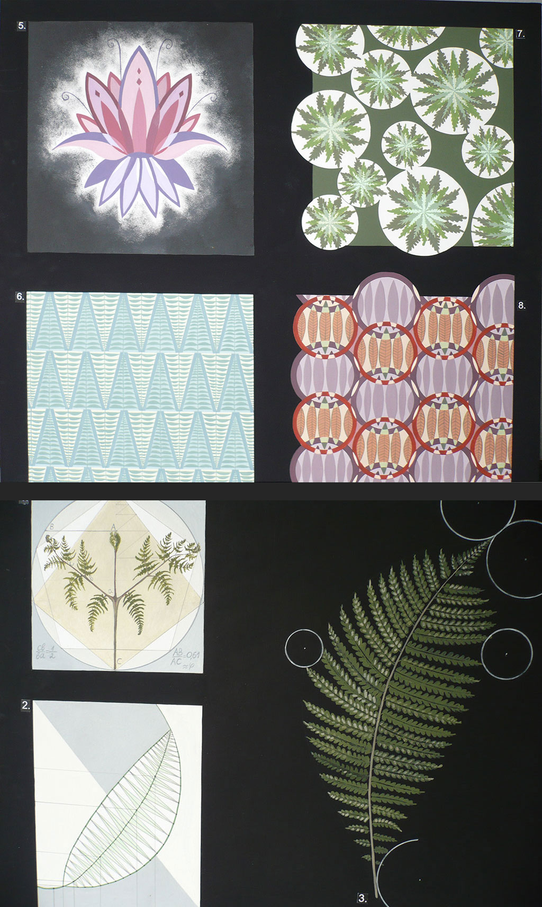
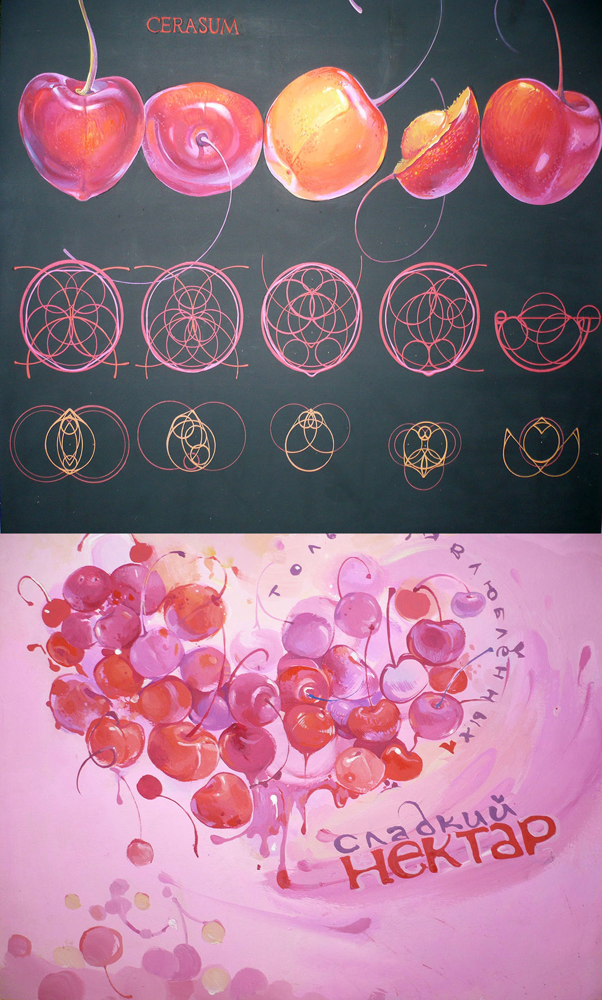
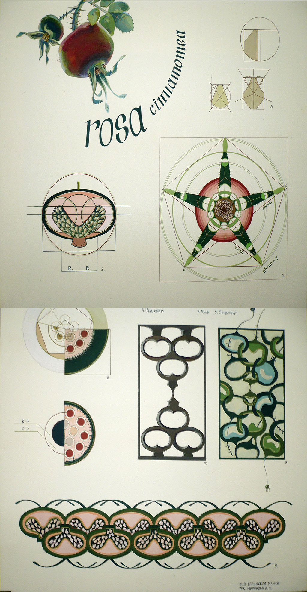
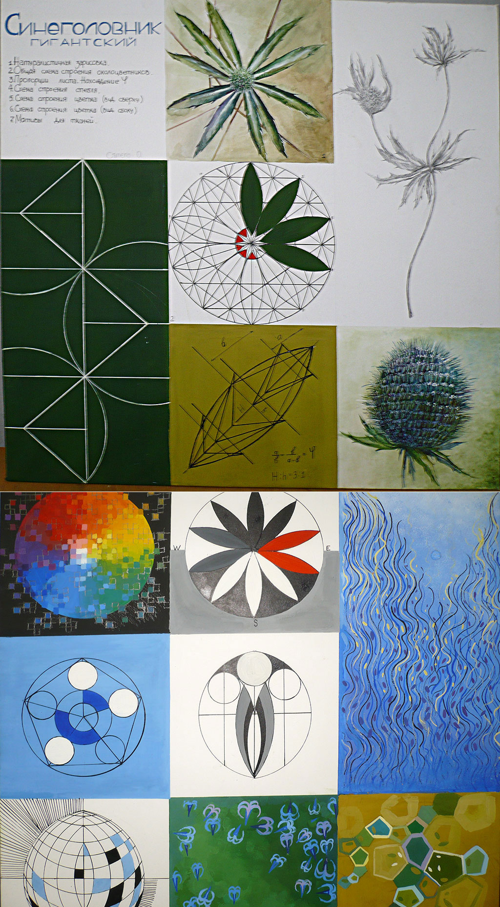
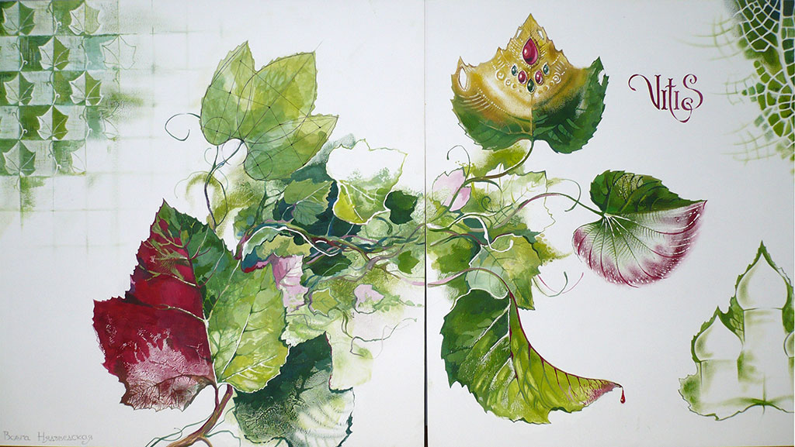
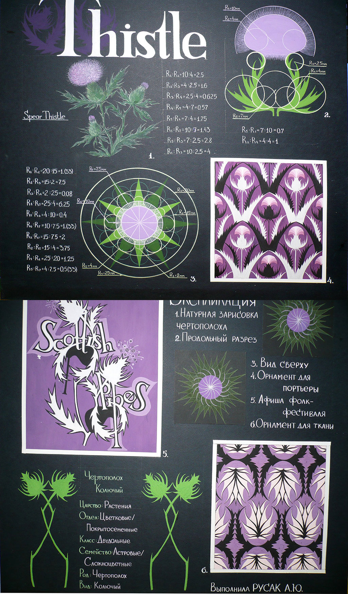
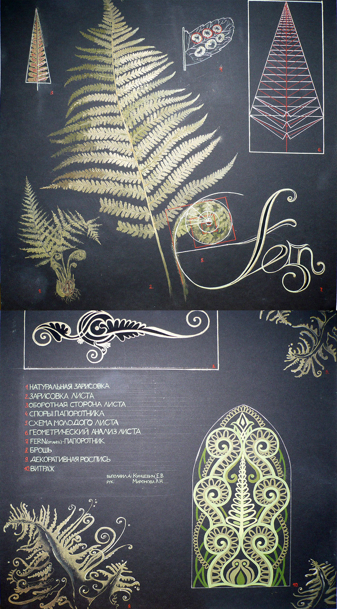

Задание
Зарисовки растений и их частей; изучение геометрической структуры; композиции в жанре прикладной графики по мотивам данной формы.
Авторы работ: Сахнова Е., Леонович Е., Кулинская М., Иванцова А., Дорошенко Д., Сапега О., Недведская О., Русак А., Кунцевич Е.
Практика лето 2008

Папоротник

Вишни

Шиповник

Синеголовник

Виноград

Репейник

Папоротник